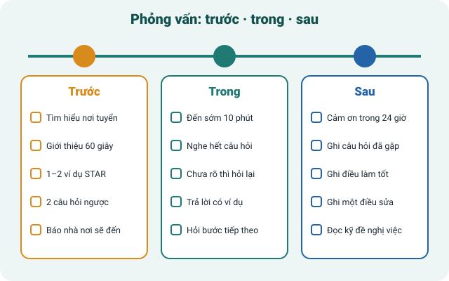

K2 · Trình bày và viết rõ ràng › Bậc 2 Bắt đầu
Chuẩn bị buổi phỏng vấn đầu tiên theo ba chặng trước, trong, sau
Bài này làm Tờ 4: Phiếu chuẩn bị phỏng vấn. Mẫu in.
1. Mục tiêu
- Nói phần giới thiệu 60 giây theo 3 ý: hiện tại, đã làm, vì sao chọn nơi này.
- Chuẩn bị 2 câu hỏi ngược và gửi tin cảm ơn trong 24 giờ.
2. Khởi động truy xuất
- Năm phần của CV một trang là gì?
- Viết lại dòng này theo công thức: "Tham gia đội văn nghệ."
Đáp án
- Liên hệ, mục tiêu, học vấn, hoạt động và kinh nghiệm, kỹ năng có bằng chứng.
- Ví dụ: "Dàn dựng tiết mục múa 6 người, đạt giải Ba hội diễn của trường." Động từ + việc + kết quả.
Xem lại: CV một trang.
3. Giải thích
Phỏng vấn làm thêm hay thực tập thường ngắn, khoảng 15–30 phút. Người tuyển muốn biết ba điều: bạn làm được việc không, bạn có đáng tin không, và bạn có hợp với nơi đó không. Chuẩn bị theo ba chặng.

Trước. Dành 15 phút tìm hiểu nơi tuyển: bán gì, khách là ai, giờ mở cửa. Luyện phần giới thiệu 60 giây:
Giới thiệu 60 giây
- Hiện tạiMình là ai, đang học gì.
- Đã làmMột hai việc liên quan, có kết quả.
- Vì sao nơi nàyMột lý do cụ thể về chỗ tuyển.
Chọn 1–2 dòng CV, chuẩn bị kể thành ví dụ STAR. Viết sẵn 2 câu hỏi ngược, tức câu bạn hỏi người tuyển. Ví dụ: "Người làm tốt vị trí này thường làm gì khác người khác?"
An toàn: phỏng vấn ở địa điểm có địa chỉ rõ. Báo người nhà nơi bạn đến. Dưới 18 tuổi thì nên có người nhà đi cùng.
Trong. Đến sớm 10 phút. Nghe hết câu hỏi rồi mới trả lời. Chưa rõ thì hỏi lại: "Anh muốn hỏi về việc ở trường hay việc làm thêm ạ?" Trả lời có ví dụ, không chỉ "em làm được". Cuối buổi, hỏi: "Khi nào em biết kết quả ạ?"
Sau. Trong 24 giờ, nhắn cảm ơn ngắn, nhắc lại một điều bạn mong được làm. Ghi lại câu hỏi đã gặp, một điều làm tốt, một điều cần sửa.
Nếu được nhận, đọc kỹ việc, ca, lương, thời gian thử việc trước khi đồng ý. Nếu không được nhận, xin một góp ý ngắn để lần sau tốt hơn.
4. Ví dụ tại nơi làm việc Việt Nam
Tình huống giả định. Mai được gọi phỏng vấn vị trí thu ngân ở siêu thị mini.
Phần giới thiệu của Mai, khoảng 50 giây:
"Em tên Mai, sinh viên năm hai ngành Quản trị kinh doanh. Năm qua em làm thủ quỹ lớp 45 bạn, thu chi công khai hằng tháng, không sai lệch đồng nào. Em cũng bán hàng ở hội chợ của khoa, thu tiền cho khoảng 150 khách. Em chọn siêu thị mình vì gần ký túc xá. Em làm được ca tối và cuối tuần ổn định."
Hai câu hỏi ngược của Mai: "Ca tối thường đông nhất vào giờ nào ạ?" và "Tuần đầu em được hướng dẫn những việc gì ạ?"
Tối hôm đó, Mai nhắn: "Em cảm ơn chị đã dành thời gian phỏng vấn em chiều nay. Em rất mong được làm ca tối ở siêu thị. Em chờ tin của chị ạ."
Vì sao cách này tốt: phần giới thiệu có số liệu và lý do cụ thể. Câu hỏi ngược cho thấy Mai đã nghĩ đến việc thật.
5. Thực hành
Tình huống giả định. Tuấn phỏng vấn vị trí hỗ trợ kỹ thuật ca tối ở cửa hàng máy tính. Người phỏng vấn hỏi: "Em giới thiệu ngắn về mình đi."
Viết phần giới thiệu 60 giây của Tuấn (dùng thông tin ở bài trước). Viết thêm 2 câu hỏi ngược và tin cảm ơn.
Gợi ý 1
Ý 2 "Đã làm" chọn việc liên quan nhất: cài máy cho 6 người và hướng dẫn họ dùng.
Gợi ý 2
Câu hỏi ngược tốt nói về việc thật: lỗi máy khách hay gặp, cách hướng dẫn người mới.
Lời giải mẫu
"Em là Tuấn, sinh viên năm nhất ngành Kế toán. Em đã cài lại Windows và phần mềm văn phòng cho 6 người quen. Sau khi cài, em hướng dẫn họ dùng. Ngày nhập học, em trực quầy thông tin, giải đáp cho khoảng 100 tân sinh viên. Em chọn cửa hàng vì muốn làm việc kỹ thuật thật, và em rảnh mọi buổi tối."
Câu hỏi ngược: "Khách mang máy đến thường gặp lỗi gì nhất ạ?" và "Người mới thường được kèm trong bao lâu ạ?"
Tin cảm ơn: "Em cảm ơn anh đã phỏng vấn em hôm nay. Em mong được học việc sửa máy ở cửa hàng. Em chờ tin anh ạ."
(Chi tiết là giả định để minh họa.)
6. Tự kiểm tra
Chọn đáp án. Mỗi lựa chọn đều có giải thích.
Câu 1. Phần giới thiệu nào theo đúng 3 ý: hiện tại, đã làm, vì sao chọn nơi này?
-
Chưa đúng. Chỉ có thông tin cá nhân, không có việc đã làm hay lý do chọn nơi này.
-
Đúng. Đúng. Đủ 3 ý, có việc cụ thể và lý do cụ thể.
-
Chưa đúng. Người tuyển chưa biết bạn là ai và làm được gì.
Câu 2. Câu hỏi ngược nào tốt nhất?
-
Chưa đúng. Có thể hỏi về lịch nghỉ, nhưng câu hỏi đầu tiên nên cho thấy bạn quan tâm đến việc.
-
Đúng. Đúng. Câu hỏi cho thấy bạn đã nghĩ đến việc thật và muốn học.
-
Chưa đúng. Bỏ lỡ cơ hội thể hiện sự quan tâm và có thêm thông tin.
Câu 3. Người phỏng vấn hỏi một câu bạn chưa hiểu rõ. Bạn nên làm gì?
-
Chưa đúng. Dễ trả lời lạc đề. Người tuyển sẽ nghĩ bạn không nghe kỹ.
-
Đúng. Đúng. Hỏi lại khi chưa rõ là kỹ năng nghe tốt, không phải điểm yếu.
-
Chưa đúng. Im lặng làm buổi phỏng vấn ngắt quãng và bạn mất điểm.
Câu 4. Một bạn 16 tuổi được hẹn phỏng vấn tại một địa chỉ lạ vào buổi tối. Cách nào an toàn nhất?
-
Chưa đúng. Địa chỉ lạ, buổi tối và chưa đủ 18 tuổi là ba lý do cần cẩn thận hơn.
-
Đúng. Đúng. Chỗ tuyển đàng hoàng sẽ sẵn lòng hẹn giờ và địa điểm rõ ràng.
-
Chưa đúng. Luôn báo người nhà nơi bạn đến, nhất là khi chưa đủ 18 tuổi.
7. Phản tư
- Câu hỏi phỏng vấn nào bạn sợ nhất? Bạn có ví dụ thật nào để trả lời câu đó?
- Khi nói to phần giới thiệu, chỗ nào bạn bị vấp? Vì sao?
8. Áp dụng thật
Trong 7 ngày tới, nói to phần giới thiệu 60 giây 3 lần, có bấm giờ. Lần thứ ba, nói trước một người bạn và xin một góp ý. Hoàn thành Tờ 4.
9. Siêu dữ liệu
| skill | K2 · Trình bày và viết rõ ràng |
|---|---|
| level | Bậc 2 · Bắt đầu |
| group | N2 |
| framework_map | CSfW: 2a Communicate for work; SkillsFuture CCS: Communication; Influence; NACE: Communication; Professionalism (chỉ dẫn chiếu) |
| updated | 2026-11-14 |
Hoàn thành bài
Đánh dấu đã học để site gợi ý lịch ôn sau 1, 3 và 7 ngày. Dữ liệu chỉ lưu trên máy của bạn.
Lịch ôn gợi ý: